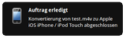
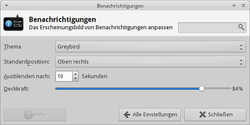
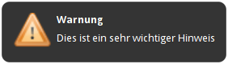

Benachrichtigungsdienst
Dieser Artikel wurde für die folgenden Ubuntu-Versionen getestet:
Ubuntu 16.04 Xenial Xerus
Ubuntu 14.04 Trusty Tahr
Zum Verständnis dieses Artikels sind folgende Seiten hilfreich:
Aktivieren eines PPAs, optional
Installation von Programmen, optional

Der Benachrichtigungsdienst (oder auf englisch notification daemon  ) war ein Dienst der Desktopumgebung GNOME 2, um Nachrichten auf dem Desktop auszugeben. Man kennt so etwas beispielsweise von Mediaplayern, die über den Dienst den aktuell gespielten Titel ausgeben. Natürlich funktioniert der Benachrichtigungsdienst auch mit anderen Desktopumgebungen oder Fenstermanagern. So benutzten z.B. auch Xubuntu und Lubuntu den Dienst. Inzwischen wird hier stattdessen xfce4-notifyd verwendet.
) war ein Dienst der Desktopumgebung GNOME 2, um Nachrichten auf dem Desktop auszugeben. Man kennt so etwas beispielsweise von Mediaplayern, die über den Dienst den aktuell gespielten Titel ausgeben. Natürlich funktioniert der Benachrichtigungsdienst auch mit anderen Desktopumgebungen oder Fenstermanagern. So benutzten z.B. auch Xubuntu und Lubuntu den Dienst. Inzwischen wird hier stattdessen xfce4-notifyd verwendet.
Hinweis:
Der Benachrichtigungsdienst ist nicht mit der Benachrichtigungsanzeige (Indicator Applets; ab Ubuntu 9.10) identisch. Unter Unity hat diese den klassischen Benachrichtigungsdienst ersetzt (zu den Details siehe Application Indicators und Unity Desktop - Indikatoren).
Unter Kubuntu wird KDialog als Benachrichtigungsdienst verwendet.
Design auswählen und anpassen¶
Das Aussehen und die Position der Benachrichtigungen unter Ubuntu lassen sich nur sehr beschränkt anpassen. Die Einstellungen hierzu sind über gconftool zu setzen. Unter
"apps -> notification-daemon"
findet man einen Schlüssel namens "theme" und "popup_location". Mit diesem Schlüssel kann man bestimmen, wo die Benachrichtigungen erscheinen sollen.
Position¶
Über den zweiten Schlüssel "popup_location" wird die Position der Popups bestimmt. Üblicherweise erscheinen diese unter Ubuntu in der rechten, oberen Ecke – also "top_right". Die Möglichkeiten sind:
top_left- links obentop_right- rechts obenbottom_left- links untenbottom_right- rechts unten
Beispiel [1]:
gconftool-2 --type String --set /apps/notification-daemon/popup_location "bottom_right"
Die Einstellungen sollten sofort aktiv sein.

Xfce¶
Die Desktop-Umgebung Xfce bringt ein eigenes Einstellungswerkzeug mit, das im Einstellungsmanager unter "Benachrichtungen" zu finden ist. Damit lassen sich das Design (Theme), die Position, die Dauer der Anzeige und die Deckkraft (Transparenz) bequem den eigenen Wünschen anpassen. Um es ohne den Einstellungsmanager zu starten, benutzt man folgenden Befehl:
xfce4-notifyd-config
Weitere Möglichkeiten¶
Um die Meldungen des Benachrichtigungsdienstes wirklich umfassend den eigenen Wünschen anzupassen, ist ein Austausch des Pakets notify-osd gegen eine erweiterte Version erforderlich. Die Installation erfolgt über ein "Personal Package Archiv" (PPA) [2]:
Adresszeile zum Hinzufügen des PPAs:
ppa:leolik/leolik
Hinweis!
Zusätzliche Fremdquellen können das System gefährden.
Ein PPA unterstützt nicht zwangsläufig alle Ubuntu-Versionen. Weitere Informationen sind der  PPA-Beschreibung des Eigentümers/Teams leolik zu entnehmen.
PPA-Beschreibung des Eigentümers/Teams leolik zu entnehmen.
Damit Pakete aus dem PPA genutzt werden können, müssen die Paketquellen neu eingelesen werden.
Nach dem Aktualisieren der Paketquellen kann folgendes Paket installiert [3] werden:
notify-osd (ppa)
 mit apturl
mit apturl
Paketliste zum Kopieren:
sudo apt-get install notify-osd
sudo aptitude install notify-osd
Die Konfiguration erfolgt über die Datei ~/.notify-osd.
Eigene Nachrichten ausgeben¶
 Man kann den Benachrichtigungsdienst auch dazu benutzen, um eigene Hinweise und Meldungen auszugeben. So kann man Skripte schreiben, die Rückmeldungen über die Benachrichtigungen ausgeben. Dazu muss man das folgende Paket installieren [4]:
libnotify-bin (universe)
mit apturl
Paketliste zum Kopieren:
sudo apt-get install libnotify-bin
sudo aptitude install libnotify-bin
Danach kann man Nachrichten über den Befehl:
notify-send TITELZEILE MELDUNG
oder wie in diesen Beispielen
# Beispiel 1 notify-send "Achtung" "Dies ist eine wichtige Meldung" # Beispiel 2 notify-send -i /usr/share/icons/gnome/48x48/status/dialog-warning.png "Warnung" "Dies ist ein sehr wichtiger Hinweis!"
ausgeben.
Hinweis:
Die Optionen -t (--expire-time) und -u (--urgency) funktionieren unter Ubuntu nicht (Ausnahme: -t 0).
| notify-send - Optionen | |
| Option | Beschreibung |
-u <low, normal, critical> | Definiert die Dringlichkeit der Meldung und bestimmt dadurch die Farbe, mit der das Popup gefüllt wird. |
-t <ms> | Blendet die Meldung für eine bestimmte Zeit (in Millisekunden) ein. Gibt man als Wert 0 an, so wird die Benachrichtigung unbegrenzt eingeblendet (bis der Benutzer das Fenster beendet). |
-i <icon.png> | Zeigt ein Icon im Benachrichtigungsfeld an. Das Format muss PNG sein. |
Deaktivieren¶
Unter Xfce 4.8 oder neuer deinstalliert man das Paket xfce4-notifyd. Da auch Lubuntu ab 12.10 den Xfce-Dienst nutzt, kann man dadurch auch hier die Benachrichtigungen deaktivieren.
Links¶
Unwetterwarnung
 - Blogbeitrag 07/2011
- Blogbeitrag 07/2011Benachrichtigungen beim Beenden langwieriger Prozesse
- Blogbeitrag 07/2010udev-notify
- grafische Rückmeldungen beim Anschluss externer Geräte
- Erstellt mit Inyoka
-
 2004 – 2017 ubuntuusers.de • Einige Rechte vorbehalten
2004 – 2017 ubuntuusers.de • Einige Rechte vorbehalten
Lizenz • Kontakt • Datenschutz • Impressum • Serverstatus -
Serverhousing gespendet von